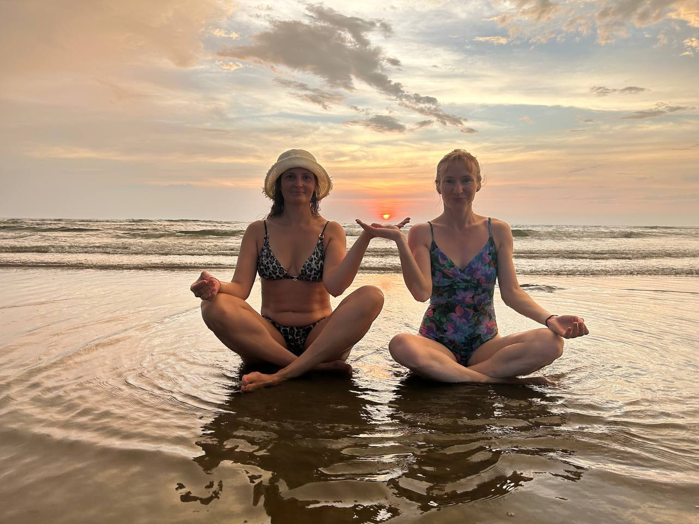
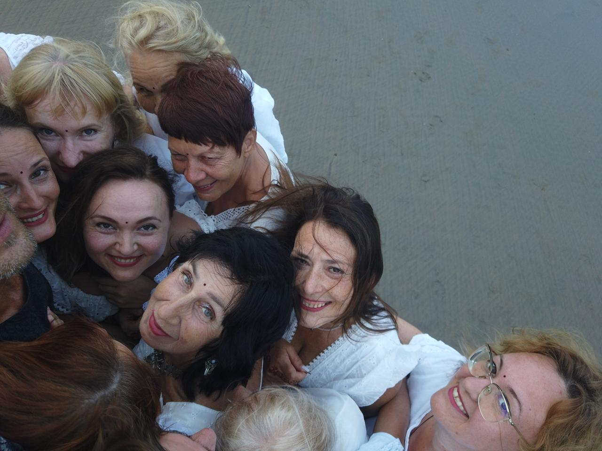
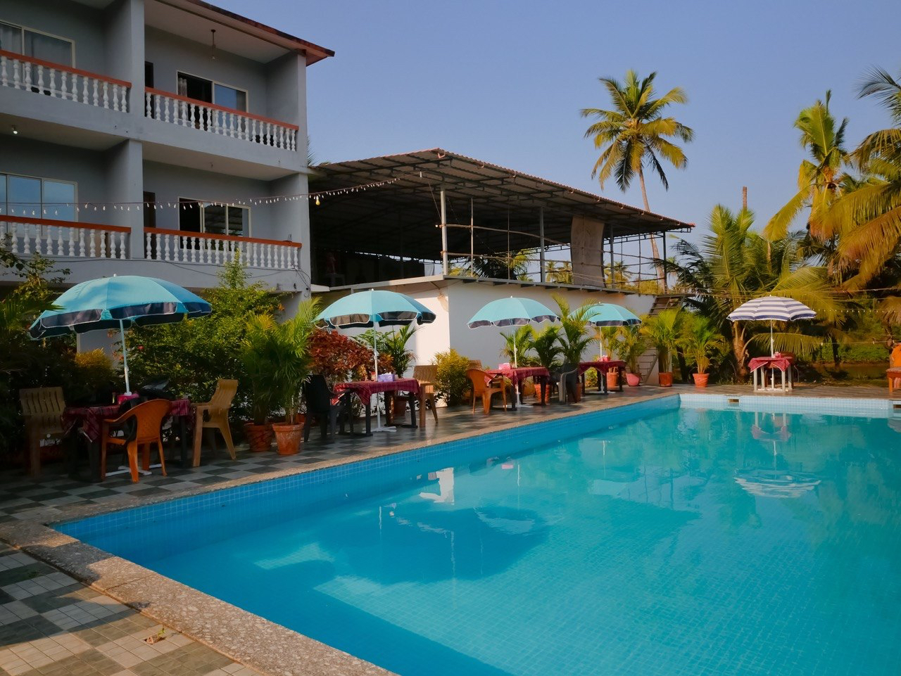
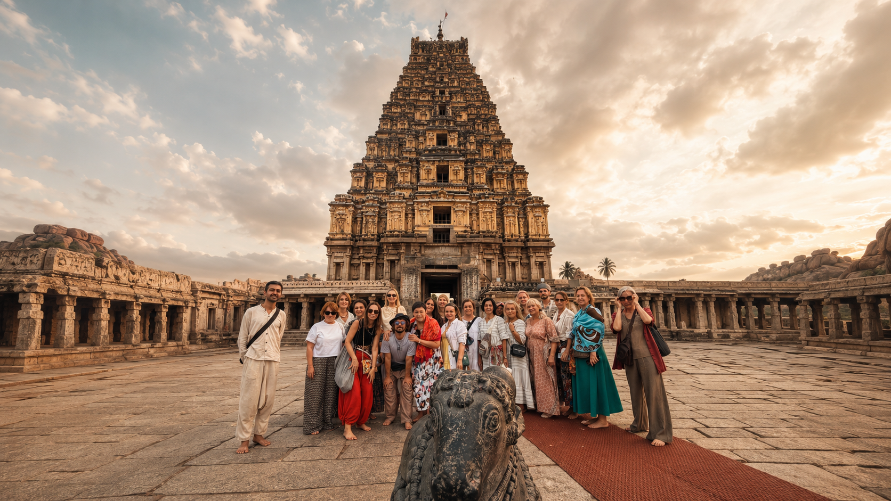
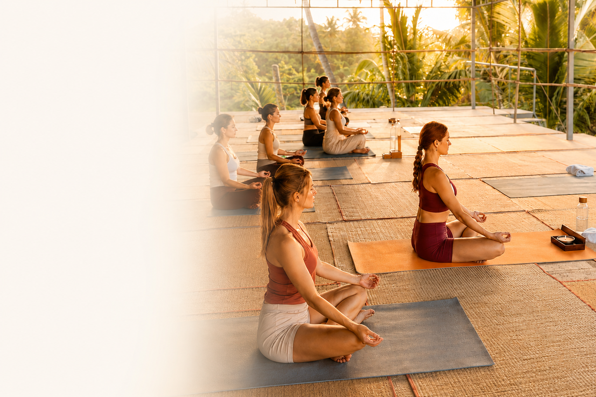

GOA FLOW · LIVING ROUTES
Goa that
stays with you.
The retreat leaves room for more than practice and the ocean. We travel to places where India opens through roads, spices, ancient temples, water and people. Routes may change with weather and availability — the point is to keep each day vivid and comfortable.

Feel the place.
05 / EXCURSIONS IN THE PROGRAMME
Two excursions are included in the retreat, and Hampi can be added separately. We travel as a small group, leave room for stops and never turn the day into a race between sights.
01 · MAHARASHTRA COAST
Redi Fort,
Ganesh and Paradise Beach.
We head north into Maharashtra and visit Redi, a quiet coastal place with a fort, history and a Ganesh temple. This is a slower side of India: less noise, more space, green paths and sea air.
After the temple we continue to Paradise Beach, with clear water and soft light. Swim, rest on the sand and, when the sea is calm, try a little snorkelling near shore.





02 · WATER AND SPICES
Dudhsagar,
jeep safari and a spice garden.
We travel to Dudhsagar, one of the region’s most striking waterfalls. The final stretch is by jeep along a forest road — an adventure in itself, with red earth, dense green and spray along the way.
After the waterfall comes a spice plantation where cardamom, pepper, cinnamon and other plants grow. Lunch, the scent of herbs and a quiet conversation in the shade turn a full day into a journey through Goa’s flavours.
03 · KARNATAKA COAST
Murudeshwar,
the ocean and Shiva.
Murudeshwar is a coastal town in Karnataka where the temple complex and the sea meet. We visit the Shiva temple, take in the panorama and leave time simply to be beside the water.
This route is about scale and stillness: the monumental Shiva statue, Arabian Sea wind, a long beach and a road that reveals another side of southern India.

OPTIONAL JOURNEY
Hampi —
go deeper for two days.
If you want to continue after the retreat, add Hampi: ancient temples, stone hills, sunrise and a place that cannot be captured in one photograph.